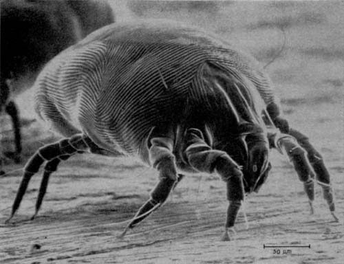

धूल का कीटHouse Dust Mite
Dermatophagoides pteronyssinus · Pyroglyphidae · SPD-0023

- Scientific nameवैज्ञानिक नाम
- Dermatophagoides pteronyssinus (Trouessart, 1897)
- Familyकुल
- Pyroglyphidae
- Hindiहिंदी
- धूल का कीट
- Local namesस्थानीय नाम
- dust mite, house dust mite, dhul ka keet, dust mait
- Status hereयहाँ की स्थिति
- native
- Movementआवागमन
- Resident, here all year
- IUCNIUCN
- not evaluated
- Reviewसमीक्षा
- audited and independently read
When to look कब देखें
Present all year.साल भर मौजूद।
Uses and possibilities उपयोग और संभावनाएँ
Drawn from the documented uses in the profile below, where each is labelled traditional, current or a research lead. All uses →
धूल का कीट / House Dust Mite
Dermatophagoides pteronyssinus (Trouessart, 1897) — Pyroglyphidae
धूल का कीट — यह बहुत छोटा, सफ़ेद घुन है जो हर घर की धूल, बिस्तर, तकिए और गद्दों में अरबों-खरबों संख्या में रहता है। नंगी आँख से नहीं दिख सकता, पर माइक्रोस्कोप में बहुत अजीब दिखता है — जैसे कोई छोटा भूत हो। यह इंसान की मरी हुई खाल की परतों खाता है — हम सब रोज़ लाखों त्वचा-कोशिकाएँ बहाते हैं, यह उसी को खाता है। इसके मल और शरीर से एक प्रोटीन निकलता है जो संवेदनशील लोगों को अस्थमा और एलर्जी देता है। बरसात और सर्दी में यह बहुत बढ़ जाता है।
Quick Identification त्वरित पहचान
| Feature | Description |
|---|---|
| Size | 0.1–0.3 mm; visible only under magnification |
| Colour | White to cream; transparent body |
| Body shape | Oval to rounded, with eight short legs |
| Eyes | Absent; no visual organs |
| Legs | Short, stout, with claws for gripping hair and fibre |
| Feces | Spherical pellets, ~10 µm, abundant in dust |
Field tip: House dust mites are never visible to the naked eye. Their presence is diagnosed by finding faecal pellets in dust samples under a microscope or by detecting specific allergens (Der p 1 and Der p 2) in household dust. Symptoms in allergic individuals include sneezing, nasal congestion, itching eyes, and sometimes asthma exacerbation, particularly upon waking.
हिंदी — कैसे पहचानें: आँख से नहीं दिख सकता। धूल में माइक्रोस्कोप से देखते हैं। सफ़ेद, गोल। इसके मल से एलर्जी होती है।
Morphology आकारिकी
Biometrics:
| Measurement | Range |
|---|---|
| Body length (female) | 0.20–0.35 mm |
| Body width | 0.15–0.25 mm |
| Leg length | 0.1–0.15 mm |
| Faecal pellet diameter | 8–12 µm |
Body structure: The body is oval, with a thin, transparent integument (skin). Eight short legs are arranged laterally on the body; each leg terminates in a claw used for gripping textile fibres. The mouth is simple, adapted for ingesting food particles and fungal spores.
Sensory organs: Lacks eyes and vision; relies on chemoreceptors and mechanoreceptors for navigation.
Sexual dimorphism: Females are slightly larger than males; males have genital suckers used in copulation.
Larval and nymphal stages: Six-legged larvae progress through nymphal instars before reaching adulthood.
हिंदी: बहुत छोटा, सफ़ेद, आठ छोटी टाँगें। आँखें नहीं। माइक्रोस्कोप से ही दिख सकता है।
Behaviour & Ecology व्यवहार और पारिस्थितिकी
Detritivore of human habitat. Dermatophagoides pteronyssinus thrives in indoor microhabitats, feeding on the continuous rain of human skin cells shed from the human body. A human sheds approximately 1.5 grams of skin per day; dust mites consume this, along with fungal spores and other organic debris. In a gram of house dust, 100–10,000 mites may be present, depending on humidity and cleanliness.
Reproduction. Under optimal conditions (20–25°C, 70–80% relative humidity), females produce 25–30 eggs over their 2–3-week lifespan. The population can double in 2–3 weeks under ideal conditions. Generation time is 4–5 weeks.
Habitat preference. The species thrives in warm, humid environments: mattresses (where human warmth and humidity are maximum), pillows, blankets, upholstered furniture, and carpets. Populations spike during the monsoon season (June–October) when humidity is high and decline during dry seasons.
Allergen production. The primary allergen is derived from faecal pellets and from a protease in the mite's digestive enzymes. The allergen is designated Der p 1 (from Dermatophagoides pteronyssinus). A major allergen (Der p 2) is also produced. These proteins remain active even after the mite dies.
हिंदी: इंसान की मरी हुई खाल खाता है। गर्म, नम जगह पसंद करता है। गद्दे और तकिए में सबसे ज़्यादा। एक ग्राम धूल में हज़ार तक घुन हो सकते हैं।
Life Cycle / Phenology जीवन चक्र
| Stage | Duration | Conditions |
|---|---|---|
| Egg | 4–5 days | Laid in dust and fabric |
| Larva | 5–10 days | Feeds on organic matter; six legs |
| Protonymph | 7–14 days | Eight legs; resembles adult |
| Deutonymph | 7–14 days | Intermediate stage |
| Adult | 2–3 weeks (female) | Reproduces; produces allergen |
| Total life cycle | 4–5 weeks | At 20–25°C and 70–80% RH |
Seasonal pattern: In tropical and subtropical regions like UP, populations are highest in warm, humid monsoon (June–October) and winter (December–February) months. Populations decline during hot, dry summer (May–June) and dry winter (January–February).
हिंदी: अंडा → लार्वा → प्रोटोनिम्फ → डिउटोनिम्फ → वयस्क; कुल चार-पाँच हफ़्ते। बरसात और सर्दी में सबसे ज़्यादा।
Host Plants or Prey आहार
Diet:
- Human skin cells and skin flakes (primary diet)
- Fungal spores and hyphae
- Bacterial cells
- Organic debris in dust
The species feeds on the continuous supply of human skin cells and does not require any other food source to complete its life cycle.
Predators / Natural Enemies शत्रु
- Predatory mites (Pyroglyphidae-specific predators) feed on dust mites in some environments
- Vacuum cleaning removes mites and faeces from household environments
- Freezing (below 0°C) kills mites but not allergens
- Heat (above 50°C) denatures allergens
Agricultural / Human Relevance कृषि प्रासंगिकता
Allergen production and health burden. Dermatophagoides pteronyssinus is the primary source of indoor allergens worldwide. House dust mite allergens are a major risk factor for asthma and allergic rhinitis, particularly in developed countries but increasingly in developing regions with improved housing and bedding.
Respiratory symptoms in sensitive individuals. Inhalation of mite faecal particles triggers IgE-mediated allergic responses in sensitised individuals. Symptoms include: allergic rhinitis (sneezing, nasal congestion, itching), allergic asthma (wheezing, cough, chest tightness, shortness of breath), and allergic conjunctivitis (itchy, watery eyes). Symptoms are often worse in the morning upon waking or in the bedroom.
Prevalence of sensitisation. In India, dust mite sensitisation is documented in 10–40% of atopic individuals in urban areas and lower prevalence in rural areas. In Basti district, sensitisation rates are expected to be lower than urban centres but are poorly documented.
Control measures (published recommendations):
- Bedding management: Use mite-proof covers on mattresses and pillows. Wash bedding weekly in hot water (above 55°C) and dry in direct sunlight (UV and heat denature allergens).
- Environmental control: Maintain indoor humidity below 50% (using dehumidifiers or air-conditioning); vacuum frequently with HEPA filters; reduce carpeting and upholstered furniture.
- Dust reduction: Damp dusting to capture particles rather than dispersing them; regular vacuuming with HEPA-filter vacuum cleaners.
- Chemical treatment: Acaricides (mite-killing sprays) can temporarily reduce populations but provide limited benefit unless combined with environmental control.
- Allergen avoidance: For allergic individuals, minimising exposure through the above measures is more effective than treating the mite.
Not medical advice: This profile describes the health problem and published public health measures. Individuals with asthma or allergic symptoms should seek diagnosis and management from qualified healthcare providers.
हिंदी: इसके मल से एलर्जी और अस्थमा होता है। गर्म पानी से बिस्तर धोना, धूप में सुखाना, नम धोने से काम होता है। नमी कम रखने से घुन कम हो जाते हैं।
Expected Locally स्थानीय रूप से अपेक्षित
Not a field record. Written from published accounts for eastern Uttar Pradesh. No confirmed local sighting yet — if you have seen it, that is what the atlas needs.
अभी तक स्थानीय पुष्टि नहीं। यह विवरण प्रकाशित स्रोतों से है, किसी अवलोकन से नहीं।
Expected in all households with bedding, particularly in humid seasons (monsoon and winter). The species is likely abundant in Basti district homes but is not typically recorded or studied. A confirmed local record would be microscopic identification of mites or mite allergens in indoor dust samples collected from homes in the district.
Distribution वितरण
Global range: Worldwide; one of the most ubiquitous mites in human habitats.
In India: Present in all homes; more abundant in urban areas and humid climates.
In Uttar Pradesh: Ubiquitous in all households with bedding; higher populations expected in monsoon.
In Basti district / eastern UP: Expected in all households, particularly during warm, humid seasons.
Research Questions शोध प्रश्न
- What is the prevalence of dust mite sensitisation among asthmatic individuals in Basti district? — Conduct skin-prick or blood IgE testing in asthma clinics.
- How do household humidity levels and seasons affect house dust mite populations in Basti homes? — Collect dust samples monthly from homes; quantify mites and Der p 1 allergen.
- Do simple, low-cost interventions (bedding covers, frequent washing, humidity reduction) reduce mite allergen levels in rural homes? — Conduct a trial in a village; measure allergen levels before and after.
- What is the relationship between indoor dust mite loads and childhood asthma exacerbation rates in the district? — Correlate dust mite counts with hospital asthma admissions.
- Are there alternative mite species (Dermatophagoides farinae, Blomia tropicalis) in Basti, and do they contribute to local allergen burden? — Collect and identify dust mites from multiple households.
Similar Species मिलती-जुलती प्रजातियाँ
| Species | How to tell apart | हिंदी |
|---|---|---|
| Dermatophagoides farinae (American dust mite) | Slightly larger; found in stored foods and drier environments; less humidity-dependent | अमेरिकी धूल घुन — ज़्यादा सूखे जगह में |
| Blomia tropicalis (tropical mite) | Slightly larger; more common in tropical, humid regions; different allergen profile | उष्ण-कटिबंधीय धूल घुन — गर्म जगह में |
| Acarus siro (grain mite) | Associated with stored foods and grains; larger; different habitat | अनाज का घुन — खाने की चीज़ों में |
Field rule: Microscopic identification requires morphological examination (body shape, leg structure, presence/absence of sensilla) or DNA barcoding. Der p 1 allergen detection in dust samples confirms the presence of D. pteronyssinus.
Taxonomy & Classification वर्गीकरण
Original description. First described by Trouessart in 1897. The genus Dermatophagoides (from Greek derma, skin, and phagos, eater) was erected for skin-feeding dust mites.
Subspecies. Monotypic — no subspecies recognised; genetic studies show population structure across continents.
Family and order placement. Order Acari (ticks and mites), family Pyroglyphidae (storage and house dust mites), subfamily Pyroglyphinae.
Phylogenetic notes. Dermatophagoides is an ancient genus closely associated with human habitats. The species likely originated in the Middle East or South Asia and has spread globally through human trade and migration.
IUCN status rationale. Not evaluated. Not a wild organism; a commensal of human dwellings globally.
Photo Gallery फोटो गैलरी
Photos needed आवश्यक फोटो
- [ ] Microscopic view of mite (सूक्ष्मदर्शी से)
- [ ] Mite faecal pellets in dust (मल के दाने)
- [ ] Dust sample from household (धूल का नमूना)
No photos yet — add field photos to media/species/house_dust_mite/ and run node scripts/sync_photos.js.
References संदर्भ
- Trouessart, E.L. (1897). Diagnose d'une espèce nouvelle de Tyroglyphus nuisible aux collections. Revue des Sciences Naturelles 7: 35–41. [original description]
- Arlian, L.G., Neal, J.S. & Vyszenski-Moher, D.L. (1992). Dust mites (Dermatophagoides spp.) in homes of atopic and non-atopic human subjects. Journal of Allergy and Clinical Immunology 90: 51–58.
- Platts-Mills, T.A.E., Tovey, E.R., Mitchell, E.B., Moszoro, H., Lind, P. & Chapman, M.D. (1984). Reduction of bronchial hyperreactivity during prolonged allergen avoidance. Lancet 2: 675–678.
- Fernández-Caldas, E., Cardona, M.E., Anz, U. & Lafosse, A. (1994). Allergen levels in dust from homes of patients with asthma in tropical regions. Journal of Allergy and Clinical Immunology 93: 589.
- Custovic, A. & Prescott, S. (2012). Dust mites and indoor allergens. Current Allergy and Asthma Reports 12: 478–487.
- GBIF Occurrence Data — Dermatophagoides pteronyssinus, India (2024).
Source file: species/fauna/spiders/house_dust_mite.md